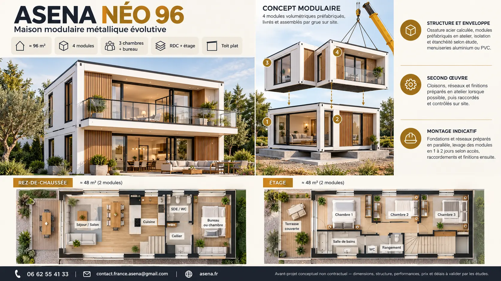
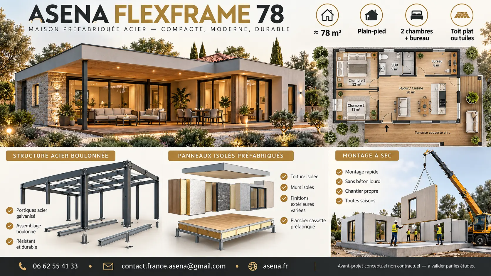
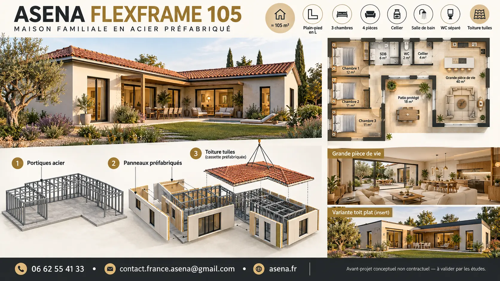
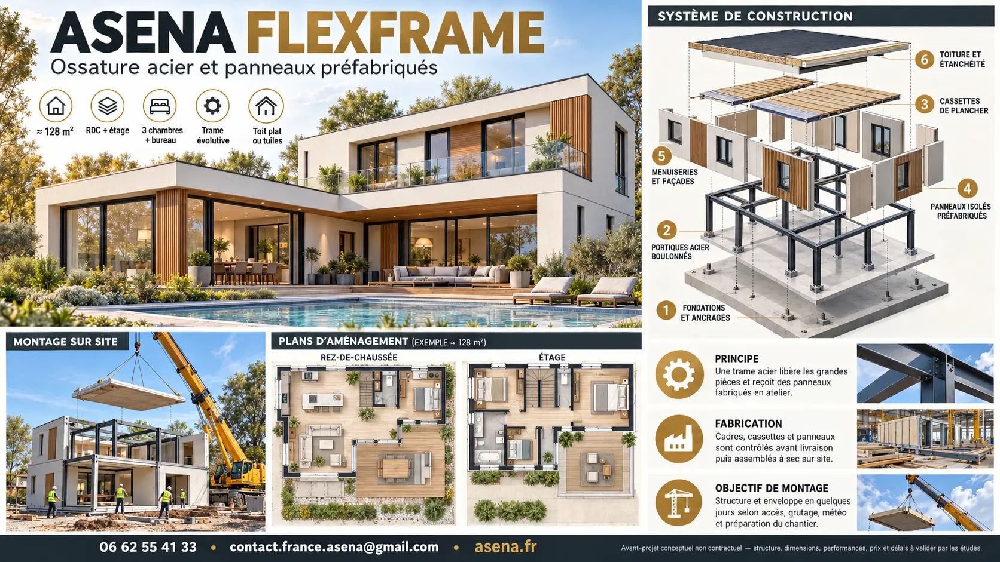
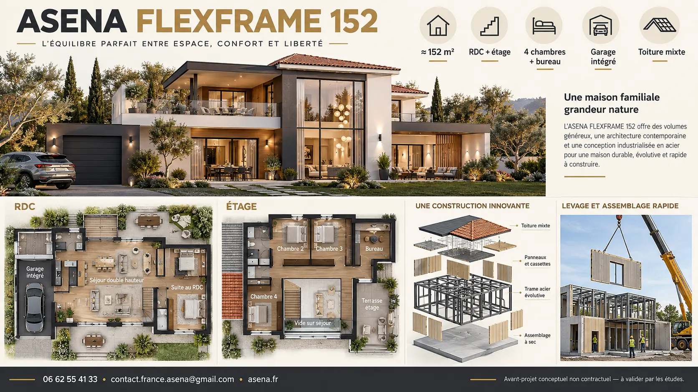
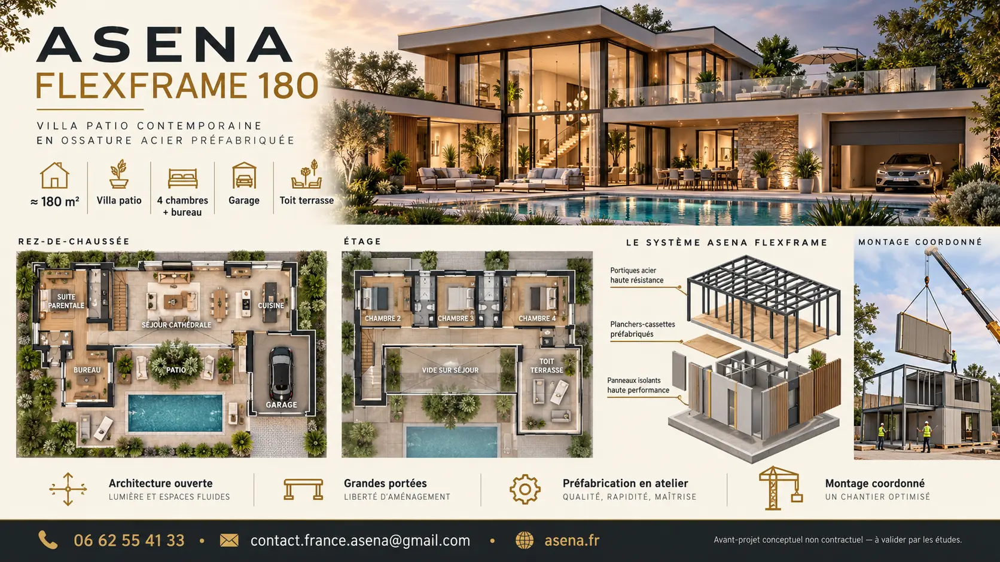

Châssis acier
Poteaux, poutres, plancher et contreventement calculés selon les charges, les ouvertures, le transport, le levage et la zone du projet.

Le principe
La structure principale est formée de cadres métalliques dimensionnés par un bureau d’études. Chaque module constitue une partie transportable de la maison : chambre, séjour, bloc technique ou circulation.
Les modules peuvent recevoir en atelier une partie de l’isolation, des menuiseries, des cloisons, des réseaux et des finitions. Ils sont ensuite transportés, levés et reliés sur des fondations préparées.
Il ne s’agit pas automatiquement de conteneurs maritimes recyclés : la trame, les sections d’acier, les ouvertures et les assemblages sont conçus pour le projet.
Composition d’un module
La performance dépend autant de la structure que du traitement des jonctions entre les modules.
Poteaux, poutres, plancher et contreventement calculés selon les charges, les ouvertures, le transport, le levage et la zone du projet.
Composition sèche ou mixte, isolée et protégée, adaptée aux charges d’usage et à l’acoustique recherchée.
Isolation continue, membranes et parements choisis après étude thermique et hygrothermique, avec traitement des ponts thermiques.
Baies aluminium ou PVC intégrées à l’enveloppe, avec calfeutrement, étanchéité et protections solaires selon le projet.
Électricité, plomberie, ventilation et évacuations préparées dans des zones accessibles, puis raccordées entre modules sur site.
Bardage, enduit sur support adapté ou façade mixte. Toit plat ou toiture rapportée en tuiles selon l’architecture et l’urbanisme.
Du plan à la réception
Le délai final dépend surtout des études, des autorisations, de la capacité de production, des fondations et des raccordements.
Le modèle pilote
Une base compacte et évolutive permettant d’étudier la répétition des modules et la superposition sur deux niveaux.
Surface indicative répartie sur un rez-de-chaussée et un étage.
Deux volumes par niveau, reliés autour de la circulation et des réseaux.
Le bureau du rez-de-chaussée peut devenir une chambre d’appoint.
Montage indicatif des volumes, uniquement si fondations, accès et logistique sont prêts.
Catalogue métallique
Du plain-pied compact à la villa premium, chaque modèle constitue une base de discussion à adapter au terrain, à l’urbanisme et au niveau de finition.

Compact · Plain-pied
Une maison compacte avec séjour-cuisine ouvert, bureau évolutif et terrasse couverte en L.
Demander une étude →
Familiale · Plain-pied en L
Trois chambres et une grande pièce de vie organisées autour d’un patio protégé.
Demander une étude →
Évolutive · R+1
Une trame à deux niveaux qui libère les grandes pièces et organise les espaces de nuit à l’étage.
Demander une étude →
Grande familiale · R+1
Suite au rez-de-chaussée, séjour double hauteur, quatre chambres et toiture mixte.
Demander une étude →
Villa premium · Patio
Une villa ouverte autour du patio et de la piscine, avec grandes portées, suite parentale et terrasse à l’étage.
Demander une étude →Images et plans d’intention non contractuels. Les surfaces, dimensions, ouvertures, structures, fondations, performances, prix et délais sont établis après études.
Niveaux de livraison
La notice descriptive précise les travaux compris, les options et les prestations réservées au client.
Structure
Intermédiaire
Complet
Points de vigilance
Objectif indicatif : levage des modules en 1 à 2 jours lorsque le projet est entièrement préparé. La conception, les autorisations, la fabrication, les fondations, les raccordements et les finitions s’ajoutent à cette phase. Aucun délai ne peut être garanti avant étude complète.
Projet métallique
Envoyez la commune, le plan du terrain, la surface souhaitée, le nombre de chambres et le niveau de finition.